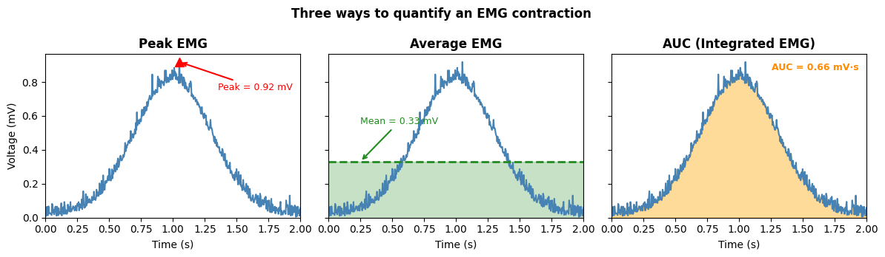
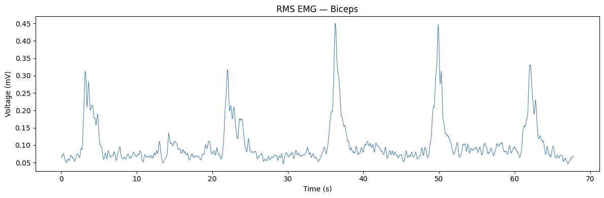
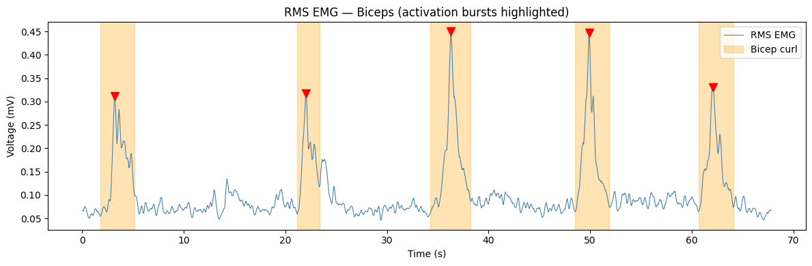
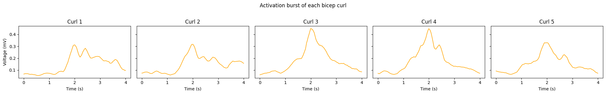

Analyze EMG data#
An electromyogram (EMG) measures the electrical activity produced by skeletal muscles. In this notebook, we will analyze the root mean square (RMS) of a biceps EMG signal recorded during a bicep curl. RMS processing smooths the raw EMG into a continuous envelope that reflects the overall level of muscle activation over time.
Analysis Choices#
When analyzing EMG data, we can decide to measure the peak EMG, the average EMG, or the area under the EMG, often called the “integrated” EMG signal.
If you’d prefer to run this analysis in LabChart, you can do so following these instructions. The code below will allow you to analyze it in Python!
Python Analysis#
- Export a LabChart Text File (.txt) of your EMG recording.
- Upload the file to Colab (or place it in the same folder as this notebook).
- Change the
filenamevariable in the cell below to exactly match your file name.
# Schematic: three ways to quantify an EMG contraction
import numpy as np
import matplotlib.pyplot as plt
np.random.seed(42)
t = np.linspace(0, 2, 500)
burst = 0.8 * np.exp(-((t - 1.0)**2) / (2 * 0.3**2))
burst += 0.04 * np.abs(np.random.normal(size=len(t)))
burst = np.clip(burst, 0, None)
fig, axes = plt.subplots(1, 3, figsize=(12, 3.5), sharey=True)
# --- Panel 1: Peak EMG ---
peak_idx = np.argmax(burst)
axes[0].plot(t, burst, color='steelblue', linewidth=1.5)
axes[0].plot(t[peak_idx], burst[peak_idx], 'r^', markersize=9, zorder=5)
axes[0].annotate(f'Peak = {burst[peak_idx]:.2f} mV',
xy=(t[peak_idx], burst[peak_idx]),
xytext=(t[peak_idx] + 0.3, burst[peak_idx] * 0.82),
arrowprops=dict(arrowstyle='->', color='red', lw=1.5),
fontsize=9, color='red')
axes[0].set_title('Peak EMG', fontweight='bold')
# --- Panel 2: Average EMG ---
mean_val = np.mean(burst)
axes[1].plot(t, burst, color='steelblue', linewidth=1.5)
axes[1].fill_between(t, 0, mean_val, alpha=0.25, color='forestgreen')
axes[1].axhline(mean_val, color='forestgreen', linewidth=2, linestyle='--')
axes[1].annotate(f'Mean = {mean_val:.2f} mV',
xy=(0.25, mean_val),
xytext=(0.25, mean_val + 0.22),
arrowprops=dict(arrowstyle='->', color='forestgreen', lw=1.5),
fontsize=9, color='forestgreen')
axes[1].set_title('Average EMG', fontweight='bold')
# --- Panel 3: AUC (Integrated EMG) ---
auc = np.trapezoid(burst, t)
axes[2].plot(t, burst, color='steelblue', linewidth=1.5)
axes[2].fill_between(t, 0, burst, alpha=0.4, color='orange')
axes[2].text(0.97, 0.90, f'AUC = {auc:.2f} mV·s',
transform=axes[2].transAxes, ha='right',
fontsize=9, color='darkorange', fontweight='bold')
axes[2].set_title('AUC (Integrated EMG)', fontweight='bold')
for ax in axes:
ax.set_xlabel('Time (s)')
ax.set_ylim(bottom=0)
ax.set_xlim(0, 2)
axes[0].set_ylabel('Voltage (mV)')
plt.suptitle('Three ways to quantify an EMG contraction', fontweight='bold')
plt.tight_layout()
plt.show()

import numpy as np
import matplotlib.pyplot as plt
from scipy import signal
# Change the filename to EXACTLY match your file
filename = 'baseline.txt'
# Define column names
columns = ['time', 'recording']
# Load the data (skip the 6-line LabChart header)
data = np.genfromtxt(filename, dtype=float, usecols=(0, 1), skip_header=6,
delimiter='\t', names=columns, encoding='unicode_escape')
recording = data['recording'] # RMS voltage in mV
# LabChart text files can contain a second header block mid-recording, which
# injects NaN values and one very large spurious number. Mark anything outside
# a plausible voltage range as NaN, then interpolate across all NaN values.
recording[recording > 10.0] = np.nan
nans = np.isnan(recording)
x = np.arange(len(recording))
recording[nans] = np.interp(x[nans], x[~nans], recording[~nans])
# Build a continuous timestamp array from the sampling interval
interval = 0.005 # seconds (from the LabChart header: Interval = 0.005 s)
timestamps = np.arange(len(recording)) * interval
print(f'Loaded {len(timestamps)} samples | duration: {timestamps[-1]:.2f} s | interval: {interval} s')
---------------------------------------------------------------------------
FileNotFoundError Traceback (most recent call last)
Cell In[2], line 12
9 columns = ['time', 'recording']
11 # Load the data (skip the 6-line LabChart header)
---> 12 data = np.genfromtxt(filename, dtype=float, usecols=(0, 1), skip_header=6,
13 delimiter='\t', names=columns, encoding='unicode_escape')
15 recording = data['recording'] # RMS voltage in mV
17 # LabChart text files can contain a second header block mid-recording, which
18 # injects NaN values and one very large spurious number. Mark anything outside
19 # a plausible voltage range as NaN, then interpolate across all NaN values.
File /opt/miniconda3/lib/python3.12/site-packages/numpy/lib/_npyio_impl.py:1990, in genfromtxt(fname, dtype, comments, delimiter, skip_header, skip_footer, converters, missing_values, filling_values, usecols, names, excludelist, deletechars, replace_space, autostrip, case_sensitive, defaultfmt, unpack, usemask, loose, invalid_raise, max_rows, encoding, ndmin, like)
1988 fname = os.fspath(fname)
1989 if isinstance(fname, str):
-> 1990 fid = np.lib._datasource.open(fname, 'rt', encoding=encoding)
1991 fid_ctx = contextlib.closing(fid)
1992 else:
File /opt/miniconda3/lib/python3.12/site-packages/numpy/lib/_datasource.py:192, in open(path, mode, destpath, encoding, newline)
155 """
156 Open `path` with `mode` and return the file object.
157
(...) 188
189 """
191 ds = DataSource(destpath)
--> 192 return ds.open(path, mode, encoding=encoding, newline=newline)
File /opt/miniconda3/lib/python3.12/site-packages/numpy/lib/_datasource.py:529, in DataSource.open(self, path, mode, encoding, newline)
526 return _file_openers[ext](found, mode=mode,
527 encoding=encoding, newline=newline)
528 else:
--> 529 raise FileNotFoundError(f"{path} not found.")
FileNotFoundError: baseline.txt not found.
Step 1: Plot the entire dataset#
Let’s start by plotting the full RMS EMG trace. Each upward deflection corresponds to a moment of increased biceps muscle activity — in this case, one bicep curl. The baseline (resting) voltage is the low, flat region between curls.
fig, ax = plt.subplots(figsize=(12, 4))
ax.plot(timestamps, recording, linewidth=0.8, color='steelblue')
ax.set_xlabel('Time (s)')
ax.set_ylabel('Voltage (mV)')
ax.set_title('RMS EMG — Biceps')
plt.tight_layout()
plt.show()

Step 2: Detect bicep curl activations#
Next, we’ll automatically detect each bicep curl by finding peaks in the RMS signal using scipy.signal.find_peaks, then clip out the full activation burst — from the local minimum before each peak to the local minimum after it.
Three key parameters control detection:
height_fraction— peaks must exceed this fraction of the recording’s maximum voltage (e.g.,0.6means 60% of max). This adapts automatically to different signal amplitudes.prominence_threshold— peaks must stand out from the surrounding signal by at least this much (mV).min_peak_distance— if two peaks are closer than this many samples, only the taller one is kept.
height_fraction in the cell below.
# --- Tunable parameters ---
height_fraction = 0.6 # peaks must exceed this fraction of the recording's max voltage
prominence_threshold = 0.03 # minimum peak prominence in mV
search_window = 400 # samples to search before/after each peak (~2 s at 200 Hz)
min_peak_distance = 400 # if two peaks are within this many samples, keep only the tallest
# Adaptive threshold — scales automatically with signal amplitude
height_threshold = height_fraction * recording.max()
print(f'Peak threshold: {height_threshold:.4f} mV ({height_fraction} × max)')
# Find peaks
peaks, _ = signal.find_peaks(recording,
height=height_threshold,
prominence=prominence_threshold)
# Remove nearby duplicate peaks — greedily keep the tallest within min_peak_distance
sorted_by_height = peaks[np.argsort(recording[peaks])[::-1]]
kept = []
for p in sorted_by_height:
if all(abs(p - k) >= min_peak_distance for k in kept):
kept.append(p)
peaks = np.array(sorted(kept)) # restore time order
print(f'Detected {len(peaks)} peak(s) at times: {np.round(timestamps[peaks], 2)} s')
# For each peak, find the full activation burst: local min before → local min after
bursts = []
for peak_idx in peaks:
pre_start = max(0, peak_idx - search_window)
start_idx = pre_start + np.argmin(recording[pre_start:peak_idx])
post_end = min(len(recording), peak_idx + search_window)
end_idx = peak_idx + np.argmin(recording[peak_idx:post_end])
bursts.append((start_idx, end_idx))
# Standardize burst length — re-extract each burst centered on its peak using
# a half-width equal to the largest half-width seen across all bursts
pre_widths = [peak - start for peak, (start, _) in zip(peaks, bursts)]
post_widths = [end - peak for peak, (_, end) in zip(peaks, bursts)]
half_width = max(max(pre_widths), max(post_widths))
standardized_bursts = []
for peak_idx in peaks:
start_idx = max(0, peak_idx - half_width)
end_idx = min(len(recording) - 1, peak_idx + half_width)
standardized_bursts.append((start_idx, end_idx))
print(f'Standardized burst duration: {2 * half_width * interval:.2f} s ({2 * half_width} samples)')
Peak threshold: 0.2699 mV (0.6 × max)
Detected 5 peak(s) at times: [ 3.2 22.04 36.26 49.9 62.1 ] s
Standardized burst duration: 4.00 s (800 samples)
# --- Plot 1: Full trace with activation bursts highlighted ---
fig, ax = plt.subplots(figsize=(12, 4))
ax.plot(timestamps, recording, linewidth=0.8, color='steelblue', label='RMS EMG')
for i, (start, end) in enumerate(bursts):
label = 'Bicep curl' if i == 0 else '_nolegend_'
ax.axvspan(timestamps[start], timestamps[end], alpha=0.3, color='orange', label=label)
ax.plot(timestamps[peaks[i]], recording[peaks[i]], 'rv', markersize=8) # peak marker
ax.set_xlabel('Time (s)')
ax.set_ylabel('Voltage (mV)')
ax.set_title('RMS EMG — Biceps (activation bursts highlighted)')
ax.legend()
plt.tight_layout()
plt.show()

# --- Plot 2: Each activation burst displayed individually (standardized length) ---
n = len(standardized_bursts)
fig, axes = plt.subplots(1, n, figsize=(4 * n, 3), sharey=True)
if n == 1:
axes = [axes]
for i, (start, end) in enumerate(standardized_bursts):
t_seg = timestamps[start:end + 1] - timestamps[start] # zero-align time
v_seg = recording[start:end + 1]
axes[i].plot(t_seg, v_seg, color='orange', linewidth=1.2)
axes[i].set_xlabel('Time (s)')
axes[i].set_title(f'Curl {i + 1}')
axes[0].set_ylabel('Voltage (mV)')
plt.suptitle('Activation burst of each bicep curl', y=1.02)
plt.tight_layout()
plt.show()

Step 3: Calculate average EMG during each burst#
The average EMG (mean voltage during a contraction) measures the typical activation intensity during a burst. Unlike the peak, it’s less sensitive to single-sample noise. Unlike the AUC, it’s independent of burst duration — making it useful for comparing contractions of different lengths.
Below, we’ll calculate the mean RMS voltage within each standardized burst.
# Calculate mean (average) EMG for each standardized burst
means = []
for start, end in standardized_bursts:
v_seg = recording[start:end + 1]
means.append(np.mean(v_seg))
# Print results
for i, mean_val in enumerate(means):
print(f'Curl {i + 1}: Mean EMG = {mean_val:.4f} mV')
print(f'\nMean across all curls: {np.mean(means):.4f} mV')
print(f'Standard deviation: {np.std(means):.4f} mV')
# Bar chart
fig, ax = plt.subplots(figsize=(6, 4))
ax.bar(range(1, len(means) + 1), means, color='steelblue', edgecolor='navy', linewidth=0.8)
ax.axhline(np.mean(means), color='red', linestyle='--', linewidth=1.5,
label=f'Mean = {np.mean(means):.3f} mV')
ax.set_xlabel('Curl #')
ax.set_ylabel('Mean Voltage (mV)')
ax.set_title('Average EMG per Bicep Curl')
ax.set_xticks(range(1, len(means) + 1))
ax.legend()
plt.tight_layout()
plt.show()
Step 4: Calculate the area under each burst#
The area under the curve (AUC) of an RMS EMG burst measures total muscle activation — it reflects both how strongly and how long the muscle was recruited during each curl. Sometimes this is called the “integrated EMG.” See Figure 54 in this guide for an explanation of different quantification methods.
Below, we’ll calculate the area using the trapezoidal rule (np.trapezoid), which approximates the area by summing thin trapezoids under the signal. The result is in units of mV·s (millivolt-seconds).
# Calculate AUC for each standardized burst using the trapezoidal rule
areas = []
for start, end in standardized_bursts:
t_seg = timestamps[start:end + 1] - timestamps[start]
v_seg = recording[start:end + 1]
areas.append(np.trapezoid(v_seg, t_seg))
# Print results
for i, area in enumerate(areas):
print(f'Curl {i + 1}: AUC = {area:.4f} mV·s')
print(f'\nMean AUC: {np.mean(areas):.4f} mV·s')
print(f'Standard Deviation of AUC: {np.std(areas):.4f} mV·s')
Curl 1: AUC = 0.5941 mV·s
Curl 2: AUC = 0.5974 mV·s
Curl 3: AUC = 0.7119 mV·s
Curl 4: AUC = 0.6923 mV·s
Curl 5: AUC = 0.6206 mV·s
Mean AUC: 0.6433 mV·s
Standard Deviation of AUC: 0.0493 mV·s